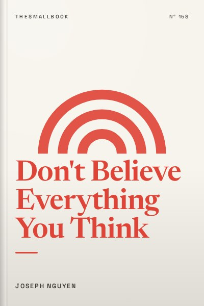

Library › Psychology & People
Don't Believe Everything You Think - Summary & Key Lessons

Thoughts are not facts. Suffering comes from thinking about thoughts, not from life itself.
📖 OPEN THE FULL INTERACTIVE BREAKDOWN →🌐 Read it in Hindi, Hinglish, Gujarati, Tamil & 22 more languages, with audio.
💡 The Big Idea
Joseph Nguyen argues that the root of anxiety, stress and unhappiness is not our circumstances but our thinking, specifically, the habit of believing and judging every thought. He distinguishes between thoughts, which arise naturally, and thinking, which is the act of engaging with and analysing them. Suffering comes from thinking about our thoughts. When we recognise this, we can let thoughts pass, access a calmer state and act from intuition rather than fear. The book is short and simple, aimed at helping readers find peace by seeing the nature of the mind.
🧠 The 8 Key Lessons
Lesson 1: The Root Cause of Suffering
Chapter 1: Why We Suffer
Nguyen argues that we often believe external events cause our feelings. In reality, he says, our feelings come from our thoughts about events. Two people can face the same situation and feel completely different, because they interpret it differently. When we suffer, it is because we are caught in thinking that judges, worries or replays events. Recognising this shifts responsibility from the world to the mind.
📖 Example: Imagine two students who both get a lower grade than expected. One thinks, 'I am a failure,' and spirals into anxiety. The other thinks, 'I need to adjust my study method,' and moves on. The grade is the same; the thinking creates different experiences. Read the full example →
⚡ Do this: Next time you feel upset, pause and ask: 'What thought am I believing right now?' Write it down.
Lesson 2: Thoughts Versus Thinking
Chapter 2: Thoughts and Thinking
Thoughts appear on their own, like clouds in the sky. Thinking is when we grab a thought and engage with it, analysing, judging or arguing. Nguyen suggests that we cannot control which thoughts arise, but we can notice when we start thinking about them. Letting thoughts pass without engagement reduces suffering.
📖 Example: When a worrying thought appears, such as 'What if I fail the interview?', we often start building scenarios. Nguyen suggests simply noticing the thought and letting it go, rather than adding more thinking. Read the full example →
⚡ Do this: For one day, notice when you start replaying a worry. Silently say 'thinking' and return attention to what you are doing.
Lesson 3: You Are Not Your Thoughts
Chapter 3: The Observer
Nguyen encourages readers to see themselves as the observer of thoughts, not the thoughts themselves. This perspective creates distance. If you are aware of a thought, you are not that thought. This idea, common in meditation traditions, helps reduce identification with negative thinking.
📖 Example: Meditation practices often ask people to watch thoughts like cars passing on a road. Over time, practitioners notice that thoughts come and go without needing to follow them. Read the full example →
⚡ Do this: Spend five minutes sitting quietly. Watch thoughts appear and disappear without following them.
Lesson 4: Feelings Are Signals
Chapter 4: Feelings as Feedback
Nguyen describes feelings as feedback about the quality of our thinking. When we feel stressed or anxious, it is a signal that we are caught in thinking. Instead of trying to fix the situation immediately, we can notice the feeling and step back from the thinking that created it.
📖 Example: If you feel tense before a meeting, it may not be the meeting itself but the thoughts about possible outcomes. Recognising this allows you to calm down before reacting. Read the full example →
⚡ Do this: When you feel a strong emotion today, pause and take three slow breaths before responding.
Lesson 5: Access Intuition and Clarity
Chapter 5: Intuition
When the mind quiets, Nguyen says, we access intuition, a deeper sense of knowing. Many creative insights come when we stop actively thinking, such as during a walk or shower. By reducing excessive thinking, we allow clarity and new ideas to emerge.
📖 Example: Many people report getting their best ideas while relaxing, exercising or falling asleep, when the mind is not busy analysing problems. Read the full example →
⚡ Do this: When stuck on a problem, take a 20-minute break without your phone: walk, shower or sit quietly. Notice if new ideas appear.
Lesson 6: Peace Is the Natural State
Chapter 6: Our Natural State
Nguyen argues that peace, joy and contentment are our natural state when we are not caught in thinking. We do not need to achieve something to feel peace; we need to stop covering it with excessive thought. This perspective changes how we pursue happiness.
📖 Example: Children often feel joy easily because they are absorbed in the moment rather than worrying about the future or past. Read the full example →
⚡ Do this: Spend ten minutes doing something absorbing, such as drawing, playing music or cooking, without multitasking.
Lesson 7: Act From Inspiration, Not Fear
Chapter 7: Inspired Action
When decisions come from fear, they often lead to stress. Nguyen encourages acting from inspiration and clarity. Instead of forcing action, notice when you feel genuinely inspired and follow that energy. This does not mean avoiding effort, but aligning effort with calm motivation.
📖 Example: People who choose careers out of fear of failure or family pressure often feel unfulfilled. Those who follow genuine interest tend to work with more energy and creativity. Read the full example →
⚡ Do this: Before making a decision this week, ask: 'Am I choosing this from fear or from inspiration?'
Lesson 8: Living With Less Thinking
Chapter 8: Practical Guidance
Nguyen offers simple practices: notice thinking, return to the present, spend time in nature and reduce unnecessary inputs such as constant news or social media. The goal is not to eliminate thoughts but to stop being controlled by them.
📖 Example: Many people find that reducing screen time and spending more time outdoors helps them feel calmer and more present. Read the full example →
⚡ Do this: Choose one input to reduce for a week, such as news alerts or late-night scrolling, and notice how your mind feels.
✅ 5-Step Action Plan
- Write down the thought behind your next strong emotion.
- Label replaying worries as 'thinking' and return to the task.
- Sit for five minutes daily and watch thoughts pass.
- Take phone-free breaks when stuck on problems.
- Reduce one mental input, such as news alerts, for a week.
⚠️ When This Doesn't Work
This book is simple and comforting, but it is not a treatment for clinical anxiety, depression or trauma. Some suffering comes from real problems such as poverty, abuse or illness, not just thinking. If distress is persistent or severe, speak to a mental health professional. Use these ideas as one tool, not a replacement for care.
💀 The Graveyard Proves It
💬 Best Quotes from Don't Believe Everything You Think
- “Thoughts are not the problem. Thinking about our thoughts is.”
- “You are not your thoughts. You are the one who is aware of them.”
- “Peace is our natural state when we stop thinking about our thinking.”
Interactive version: mark lessons as read, listen in your language, share quote cards.